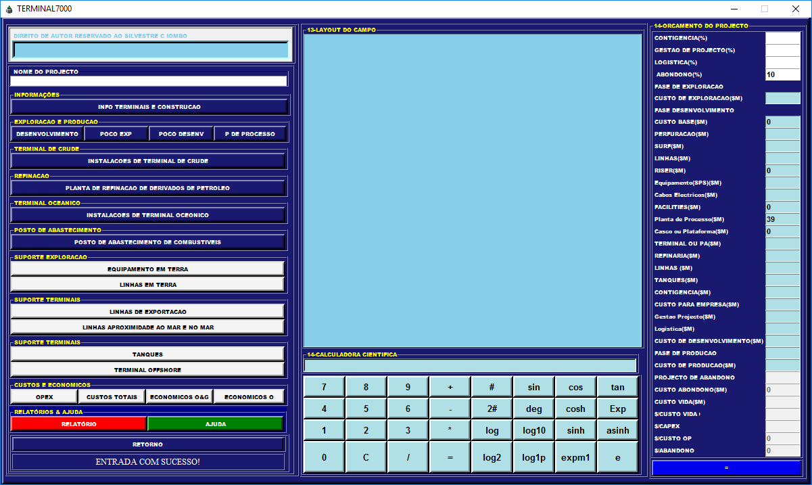

VIDEOS DAS NOSSAS CALCULADORA
OIL FIELD CALCULATOR
00:00
00:00
00:00
As calculadoras digitais começaram a adquirir formato em 2015, quando surge a OFC2000 acabada e pronta ser utilizada, desta provém a PROJEM7000 feita com base nos conhecimentos adquiridos da OFC2000.
OFC2000
Primeira calculadora de óleo e Gás
OFC2000 serve para estimação de custos e que têm como funções: emissão de perfis de produção, estimação de número de poços, toneladas de instalações, estimação de custos totais e perfis de custos, para projetos. Terminal7000
Projecta Infraestruturas e Estima custos de Terminal Oceânico e de Óleo.
Primeira Calculadora de género feito em Angola para a Projecção de Infraestruturas e Estimação de custos de Terminal Oceânico e de Óleo.
PROJEM7000
efectua estudo de viabilidade economico
PROJEM7000 é uma das primeiras calculadora de género em Angola para efectuar estudo de viabilidade economico.OFC2000
Primeira calculadora de óleo e Gás
>OFC2000 serve para estimação de custos e que têm como funções: emissão de perfis de produção, estimação de número de poços, toneladas de instalações, estimação de custos totais e perfis de custos, para projetos.OFC2000
Primeira calculadora de óleo e Gás
OFC2000 serve para estimação de custos e que têm como funções: emissão de perfis de produção, estimação de número de poços, toneladas de instalações, estimação de custos totais e perfis de custos, para projetos.Terminal7000
Projecta Infraestruturas e Estima custos de Terminal Oceânico e de Óleo.
Primeira Calculadora de género feito em Angola para a Projecção de Infraestruturas e Estimação de custos de Terminal Oceânico e de Óleo.
PROJEM7000
efectua estudo de viabilidade economico
PROJEM7000 é uma das primeiras calculadora de género em Angola para efectuar estudo de viabilidade economico.OFC2000
Primeira calculadora de óleo e Gás
>OFC2000 serve para estimação de custos e que têm como funções: emissão de perfis de produção, estimação de número de poços, toneladas de instalações, estimação de custos totais e perfis de custos, para projetos.